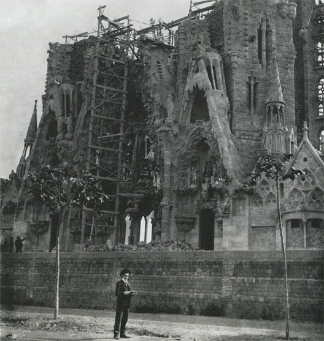
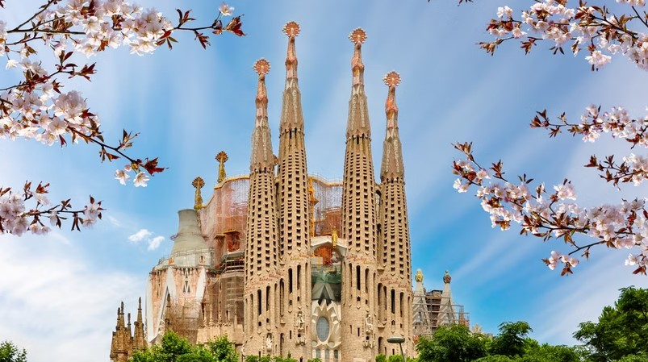

Historia
El Templo Expiatorio de la Sagrada Familia (en catalán: Temple Expiatori de la Sagrada Família), conocido simplemente como la Sagrada Familia, es una basílica católica de Barcelona (España), diseñada por el arquitecto Antoni Gaudí. Iniciada en 1882, todavía está en construcción. Es la obra maestra de Gaudí y el máximo exponente de la arquitectura modernista catalana. Es el monumento más visitado de España,y es la iglesia más visitada de Europa tras la basílica de San Pedro del Vaticano. Cuando esté finalizada, será la iglesia cristiana más alta del mundo.
La Sagrada Familia es un reflejo de la plenitud artística de Gaudí: trabajó en ella durante la mayor parte de su carrera profesional, pero especialmente en los últimos años de su carrera, donde llegó a la culminación de su estilo naturalista, en la que logró una síntesis de todas las soluciones y estilos probados hasta aquel entonces. Gaudí logró una perfecta armonía en la interrelación entre los elementos estructurales y los ornamentales, entre plástica y estética, entre función y forma, entre contenido y continente, logrando la integración de todas las artes en un todo estructurado y lógico.
Desde 1915, Gaudí se dedicó prácticamente en exclusiva a la Sagrada Familia, que supone la síntesis de toda la evolución arquitectónica del arquitecto. Después de la realización de la cripta y el ábside, todavía en estilo neogótico, el resto del templo lo concibió en un estilo orgánico, que imita las formas de la naturaleza, donde abundan las formas geométricas regladas. El interior debía semejar un bosque, con un conjunto de columnas arborescentes inclinadas, de forma helicoidal, que crean una estructura a la vez simple y resistente. Gaudí aplicó en la Sagrada Familia todos sus hallazgos experimentados anteriormente en obras como el parque Güell o la cripta de la Colonia Güell y consiguió elaborar un templo estructuralmente perfecto a la vez que armónico y estético.

La Sagrada Familia tiene planta de cruz latina, de cinco naves centrales y transepto de tres naves, y ábside con siete capillas. Ostenta tres fachadas dedicadas al Nacimiento, Pasión y Gloria de Jesús y, cuando esté concluida, tendrá dieciocho torres: cuatro en cada portal, haciendo un total de doce por los apóstoles; cuatro sobre el crucero, invocando a los evangelistas; una sobre el ábside, dedicada a la Virgen; y la torre-cimborrio central, en honor a Jesús, que alcanzará los 172,5 m de altura. El templo dispondrá de dos sacristías junto al ábside y de tres grandes capillas: la de la Asunción, en el ábside; y las del Bautismo y la Penitencia, junto a la fachada principal. Asimismo, estará rodeado de un claustro pensado para las procesiones y para aislar el templo del exterior. Gaudí aplicó a la Sagrada Familia un alto contenido simbólico, tanto en arquitectura como en escultura, ya que dedicó a cada parte del templo un significado religioso.

Durante la vida de Gaudí solo se completaron la cripta, el ábside y, parcialmente, la fachada del Nacimiento, de la que Gaudí solo vio coronada la torre de san Bernabé. A su muerte, se hizo cargo de la construcción su ayudante, Domingo Sugrañes; posteriormente, ha estado bajo la dirección de diversos arquitectos, siendo Jordi Faulí i Oller director de las obras desde 2012. En la decoración escultórica trabajaron artistas como Llorenç y Joan Matamala, Carles Mani, Jaume Busquets, Joaquim Ros i Bofarull, Etsuro Sotoo y Josep Maria Subirachs, autor este último de la decoración de la fachada de la Pasión.

La obra que realizó Gaudí, es decir, la fachada del Nacimiento y la cripta, fue incluida en 2005 por la Unesco en el sitio del Patrimonio de la Humanidad «Obras de Antoni Gaudí». Es un monumento declarado en el registro de Bienes Culturales de Interés Nacional del patrimonio catalán y en el registro de Bienes de Interés Cultural del patrimonio español con el código RI-51-0003813. Es además, desde 2007, uno de los 12 Tesoros de España. También, en 2007, fue elegida una de las Siete Maravillas de Cataluña. El templo fue declarado basílica menor el 7 de noviembre de 2010 por el papa Benedicto XVI. Ese año, la recién construida nave principal del templo recibió el Premio Ciudad de Barcelona de Arquitectura y Urbanismo. La Sagrada Familia es también conocida popularmente como la «Catedral de los pobres», a causa del cuadro homónimo del pintor modernista Joaquín Mir.